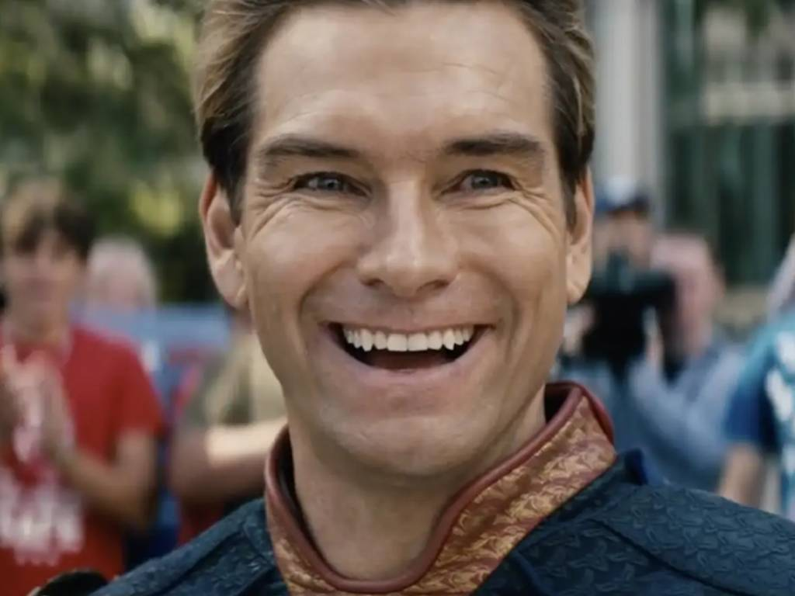

homelander
Capacidades Físicas Sobrehumanas, Influencia Social (Sabe manejar a las personas. Puede dar discursos conmovedores fácilmente. Incluso dando discursos polémicos, es amado por todos. Ha usado su poder para influir miedo y respeto en otros), Vuelo/Movimiento Libre (Posee la capacidad de moverse libremente en el aire), Proyección de Energía y Manipulación del Calor (Mediante visión láser, la cual se menciona alcanza los 260 grados), Invulnerabilidad (Se afirma que le han lanzado de todo y nada fue capaz de dañarlo. Constantemente mencionado como indestructible), Creación de Imágenes Residuales (Visto aquí), Artes Marciales (Pudo pelear a la par con Queen Maeve), Super Sentidos (Pudo sentir el olor de Butcher en Maeve. Puede escuchar explosiones a kilómetros de distancia. Escucha la presión arterial de Hughie. Puede ver a través de paredes con su visión de rayos X), Regeneración (Baja; Usuarios del compuesto V pueden regenerar huesos rotos en segundos), Resistencia a Manipulación del Calor (Pudo soportar la visión láser de Butcher)